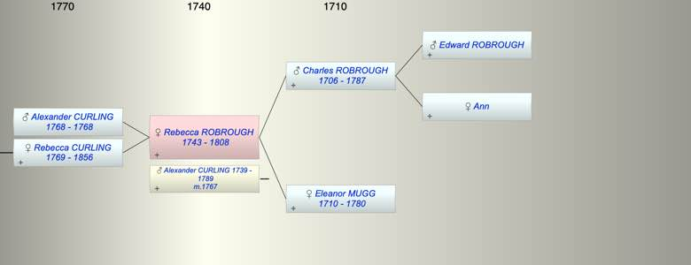

| [Index] |
| Rebecca ROBROUGH (1743 - 1808) |
|  |
| b. 1743 |
| m. 30 Jun 1767 Alexander CURLING (1739 - 1789) at St Saviour Southwark |
| d. 1808 at Coulsdon, Surrey aged 65 |
| Parents: |
| Charles ROBROUGH (1706 - 1787) |
| Eleanor MUGG (1710 - 1780) |
| Siblings (4): |
| Anna Maria ROBROUGH (1738 - 1800) |
| Mary ROBROUGH (1740 - 1776) |
| Charles ROBROUGH (1745 - 1790) |
| Samuel ROBROUGH (1747 - 1748) |
| Children (2): |
| Alexander CURLING (1768 - 1768) |
| Rebecca Ann CURLING (1769 - 1856) |
| Grandchildren (7): |
| Thomas HART (1795 - ), Alexander HART (1799 - ), Rebecca HART (1801 - 1801), John HART (1803 - ), Charles HART (1805 - ), Marianna HART (1806 - ), Elizabeth HART (1809 - ) |
| Events in Rebecca ROBROUGH (1743 - 1808)'s life | |||||
| Date | Age | Event | Place | Notes | Src |
| 1743 | Rebecca ROBROUGH was born | ||||
| 30 Jun 1767 | 24 | Married Alexander CURLING (aged 28) | St Saviour Southwark | Note 1 | |
| 1768 | 25 | Birth of son Alexander CURLING | |||
| 1768 | 25 | Death of son Alexander CURLING | |||
| 31 Mar 1769 | 26 | Birth of daughter Rebecca Ann CURLING | Bermondsey | Note 2 | |
| Feb 1780 | 37 | Death of mother Eleanor MUGG (aged 70) | Southwark | Note 3 | |
| 1787 | 44 | Death of father Charles ROBROUGH (aged 81) | Note 4 | ||
| 1789 | 46 | Death of husband Alexander CURLING (aged 50) | Will probate 1789 | ||
| 1808 | 65 | Rebecca ROBROUGH died | Coulsdon, Surrey | Note 5 | |
| Created on a Mac™ using iFamily for Mac™ on 8 Oct 2023 |